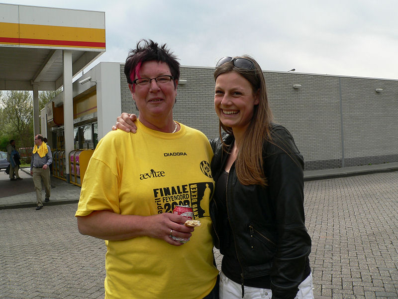
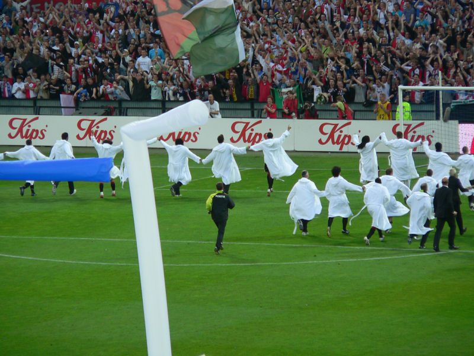

Dit is het designersteam dat het nieuwe Roda-shirt heeft ontworpen.

Ma Janssen (links) en de vriendin van Willem.
Om 16.00 uur gaan de "exoten" aan boord. Uiterst rechts in beeld zelfs
Roda-fans uit Medemblik!
(tot ziens in Volendam)
Al wandelend naar de Kuip groeit het familiegevoel naar de tientallen
tegemoetkomende supportersbussen.
Fraai voorjaarsweer voor een wandeling.
Jij wordt dus GEEN Roda-girl...
Het wemelde van politie en ME. Het laatste gedeelte naar de Kuip liepen Roda-
en Feyenoordsupporters door elkaar.
Koempels On Tour.
Moeizaam naar binnen schuifelen.
Jong en oud, Roda en Feyenoord, het ging probleemloos bij KK. Van andere
ingangen zijn minder vriendelijke verhalen gemeld.
Diverse VVV-supporters waren vandaag omgetunend tot Roda-fans.
De opzet om er een gele zee van te maken is geslaagd.
Een door de sfeermensen van WSU gemaakt mega-doek werd om dubieuze redenen
op het laatste moment afgekeurd.
Vaste Pinkpopklant. Binnenkort geen 50.000, maar 65.000 mensen om je heen...
13.650 Roda-supporters.
Sfeeractie van Feyenoord-supporters.
Vuur en papier = ...
Ook een beetje pret-vuur in de Roda-vakken.
De aftrap heeft plaatsgevonden.
Gelukkig geen dak op de Kuip.
Landzaat schuift de door Bruins aangegeven bal achter Castro: 1-0, (8'). De
zo gevreesde snelle achterstand bederft de sfeer al gauw.
Hoogtepunten c.q. dieptepunten in de eerste helft zijn het onthouden van een
penalty wanneer Oper in de zestien onderuit wordt getrokken
en het slechts met geel bestraffen van Landzaat als deze de doorgebroken
Tioté neerhaalt.
De Guzman heeft gescoord: 2-0, (36').
De beker is zo dichtbij, maar tegelijk ver weg bij deze ruststand. Feyenoord
speelt misschien iets slimmer maar weet zich gesteund door
het niet te onderschatten thuisvoordeel en de partijdige scheidsrechter Van
Hulten.

Echt vrolijk kijken deze Feyenoord maedjes niet. Dat komt wellicht door het
zwaar irritante salonorkest dat te pas en te onpas "vrolijke"
sufkuttenmuziek speelt.
De tweede helft is een formaliteit. Feyenoord rekt tijd en hoeft slechts de
voorsprong te bewaken. In de slotminuut nog een fraaie kans
voor Cissé.
Meteen nadat de wedstrijd is afgelopen begint het huldigings-ritueel.

Huub Narinx werpt zich op als troostend vaderfiguur voor de jongens.
De verliezende finalisten halen hun blauwe badjas op.
Verslagenheid.
Vreugde.

De winnaars pronken met hun witte badjas.
De terreinknecht heeft morgen een "snipperdag".
Vaag doek.
De terugtocht met hier en daar erg bijdehante Feyenoorders. Bij een
nederlaag zouden hier ernstig gewonden zijn gevallen.
Ook de ME had zin in een feestje en trad op het laatste stuk naar de bussen
irritant provocerend op.
Dat gold met name de knolcoppers.
Zwaar overdreven machtsvertoon.
De Feyenoorders gaan naar de Coolsingel en de Roda-supporters naar Kerkrade
waar donderdag alweer de eerste play-off wedstrijd
gespeeld wordt. Tegenstander is NEC.
Foto's vanuit Feyenoord-perspectief:
www.ego2.nl
www.fr-fotopage.nl